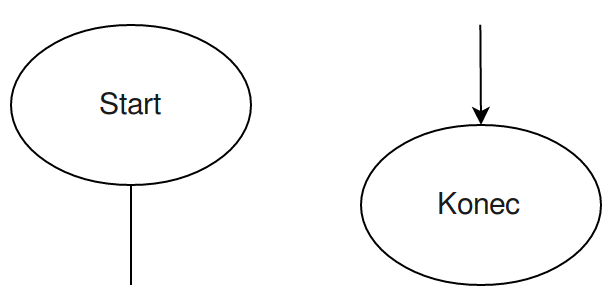
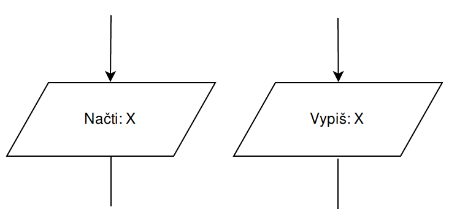
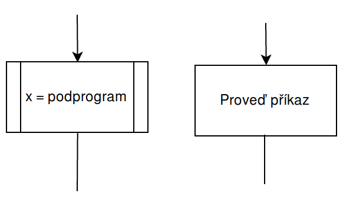
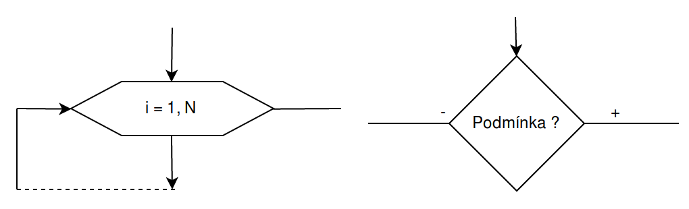

Vývojové diagramy
Tak znova...
Obecná pravidla
- Kreslí se z vrchu dolů.
- Jednotlivé bloky jsou spojené šipkami.
- Šipka může vycházet pouze z bloku.
- Čáry jsou pravoúhlé.
- Čáry se nekříží.
- Diagram MUSÍ BÝT PŘEHLEDNÝ!
http://draw.io
Začátek a konec

- Obojí je elipsa.
- Mají pouze jeden vstup/výstup.
- Začínají a končí algoritmus.
Vstup a výstup

- Obojí je kosodélník.
- Mají pouze jeden vstup a výstup.
- Vždy musí obsahovat prováděnou operaci (načti/vypiš).
Podprogram a krok algoritmu

- Oba jsou obdélníky.
- Mají pouze jeden vstup a výstup.
- V obou případech můžu nastavovat proměnné.
- Krok algoritmu může obsahovat matematické operace, případně příkazy. Podprogram vždy odkazuje na jiný vývojový diagram.
Cyklus a podmínka

- Cyklus má 2 vstupy a 2 výstupy.
- Výstup po přerušení cyklu se kreslí směrem do boku.
- Výstup pro opakování cyklu se kreslí směrem dolů.
- Podmínka má 1 vstup a 2 výstupy.
- Na výstupech podmínky musí být zaznačeno zdali je výstup kladný nebo záporný.
Úkoly - cykly
- výpočet násobení pomocí sčítání
- výpočet faktoriálu
- zjisti kolik je slov ve větě
- Až pojedu na severní pól vezmu si ...
- Když jsem já sloužil